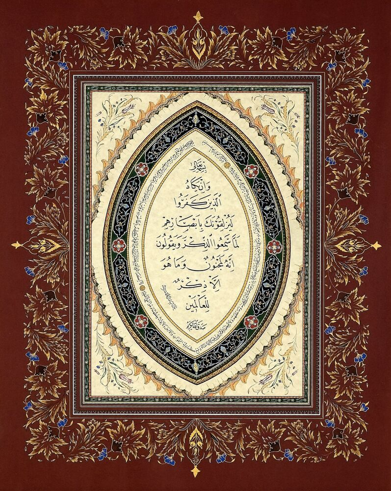
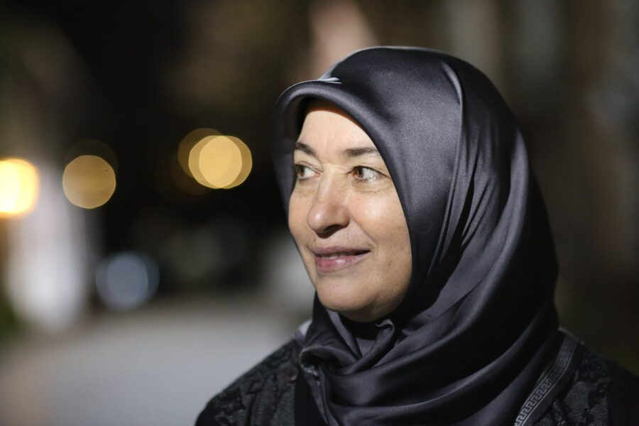
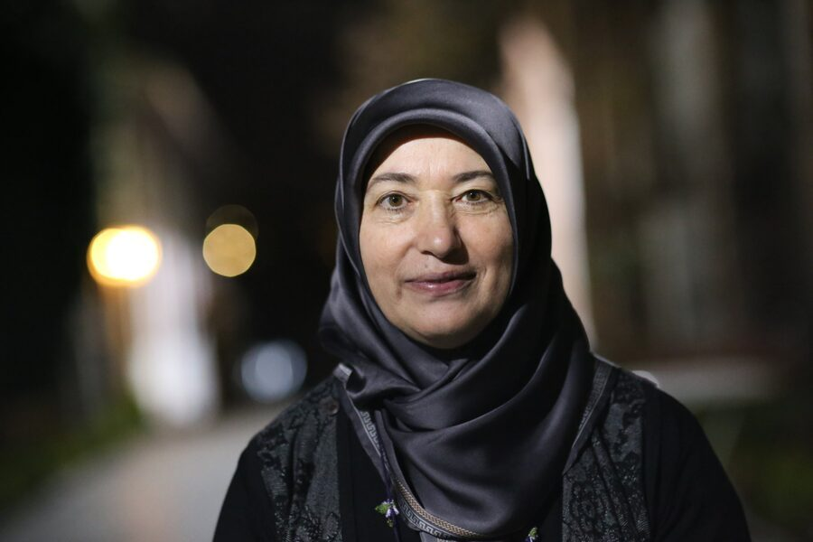
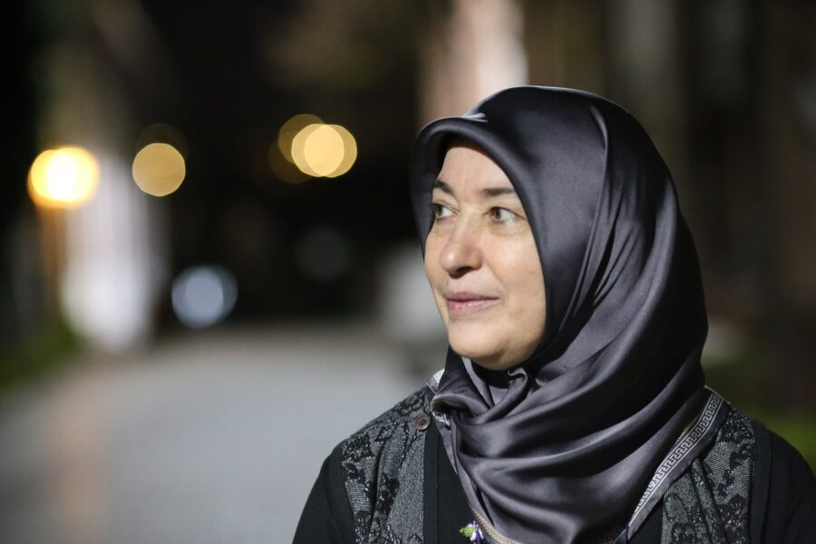
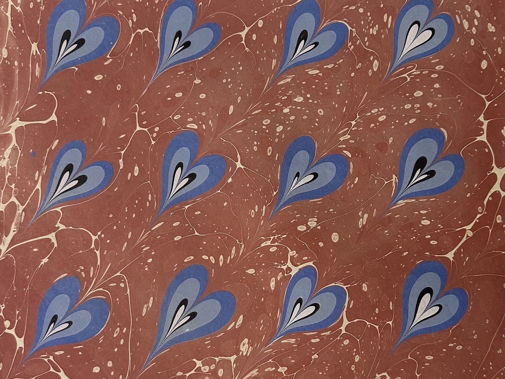
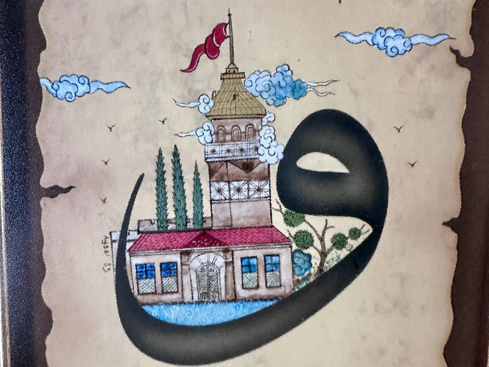
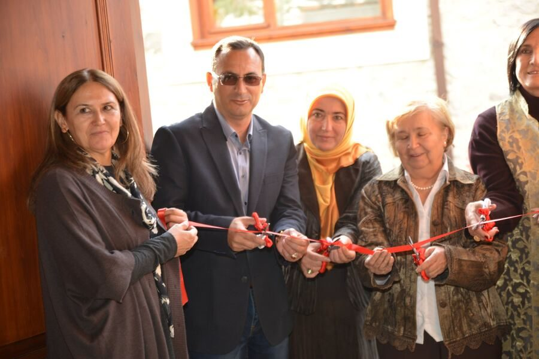

Tezhip
Illumination
Gold and pigment ornament — rumi, hatai and bulut motifs — that frames and honors the written word.
Kâğıt üzerinde altının sanatı
Aysel Toprak has practiced tezhip since 1999 — the classical Turkish-Islamic art of illuminating manuscripts and calligraphy with gold and hand-prepared pigments in geometric and floral ornament. Alongside illumination she has studied çini, miniature painting and ebru.




Aysel Toprak was born in Ankara in 1966 and graduated from the Dokuzuncu Akşam Sanat Okulu, a vocational evening school of arts, in 1982. She was introduced to tezhip through her husband, Mehmet Toprak. She joined the Turkish-Islamic arts courses in tezhip opened by the Ministry of Culture and studied with Memnune Birkan. The late miniature artist Ömer Faruk Atabek admired her line work and advised her to continue with tezhip, which strengthened her resolve. Despite the difficult conditions of the time, she completed her training and received her certificate of completion and achievement in 2001.
In the years that followed she took lessons in çini with Hikmet Türker (2010), miniature painting with Figen Kubatoğlu (2014–2016) and ebru with Sevimbike Polat (2024–2025), and from 2014 to 2018 continued her tezhip studies with Orhan Dağlı. She practices all of these arts with love, but says that tezhip is the art that completes her. In 2008 she received the Ministry of Culture and Tourism's juried Artist Credential as a Master of Turkish Decorative Arts and a Bearer of Intangible Cultural Heritage.
She held her first solo exhibition in 2004 at Pirinç Han in the Ankara Citadel. Since then her work has been shown in exhibitions at the Mamak Cultural Center, the State Museum of Painting and Sculpture and the Art Street of the Ulucanlar Prison Museum in Ankara, and in 2025 at the International Islamic Arts Exhibition in Zeytinburnu, Istanbul, and at the Zakat Foundation in Newark, Delaware. Her 2023 thematic exhibition, illuminating passages selected from Qâdî ʿIyâd's al-Shifâ, was among her most widely admired work. She is now preparing a new exhibition on the prayers of the prophets in the Qur'an. In March 2020 she created the illumination designs for the Badriya Nasser Al-Jeyan Mosque in Kuwait and guided its painted-decoration (kalem işi) team.
Aysel Toprak has taught tezhip since 2002, at the Science, Culture and Arts Foundation (İLKSAV), the Mamak Public Education Center, courses of the Ministry of Culture and Tourism, and youth centers of the Ministry of Youth and Sports and the Turkish Diyanet Foundation. Since 2014 she has given private lessons in her own studio on the Art Street of the Ulucanlar Prison Museum, and she also teaches at the Tennure Art Gallery. Many of the more than 400 students she has trained have graduated successfully from faculties of fine arts.
Each piece is made entirely by hand, following methods passed from master to apprentice for over five centuries.
Gold and pigment ornament — rumi, hatai and bulut motifs — that frames and honors the written word.

Pigments floated on thickened water and lifted onto paper — every sheet a single, unrepeatable moment.

Fine-brush painting in the Ottoman miniature tradition — cityscapes, flowers and storytelling in jewel-like color.

Plates and tiles hand-painted with İznik-inspired tulips, carnations and saz leaves, then glazed and fired.
Original illuminations and hilye compositions. Select any work to view it larger.
Calligraphy in these panels is by master calligraphers (hattat); Aysel Toprak is the illuminator.
Solo, group and thematic exhibitions in Türkiye and the United States.



Represented in the United States by Artista Noble, Philadelphia
Download CV (PDF)More than 400 students since 2002. Many students of faculties of fine arts have taken lessons with her and graduated with honors.
Has worked with illuminator Orhan Dağlı and with calligraphers including Abdulkadir Kaya, Fatih Çelik, Ali İhsan Sakal, Yusuf Şükrü Şafak, Muharrem Gökşen, Özgür Çetintaş, Erhan Bektaş and Ebru Koyuncu.

Tezhip has always been taught in the atelier, side by side. Aysel Toprak offers introductory and advanced workshops for those who want to experience the discipline firsthand.
For acquisitions, commissions, exhibition proposals and workshop invitations.
Original works, commissions and fine-art giclée prints by Aysel Toprak are available through Artista Noble.
Galleries, museums and universities interested in exhibitions or residencies.
Group and private workshops, demonstrations and lectures in Ankara and the U.S.